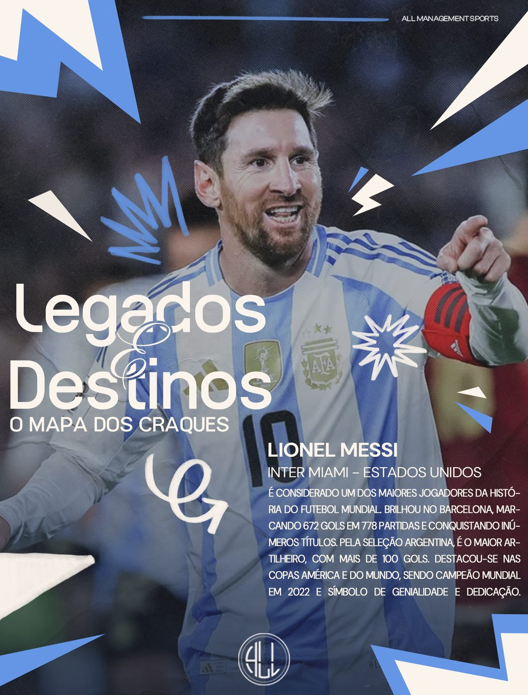
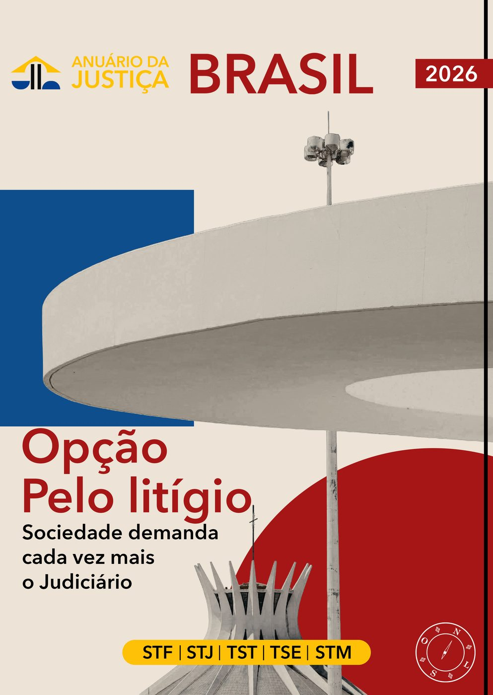
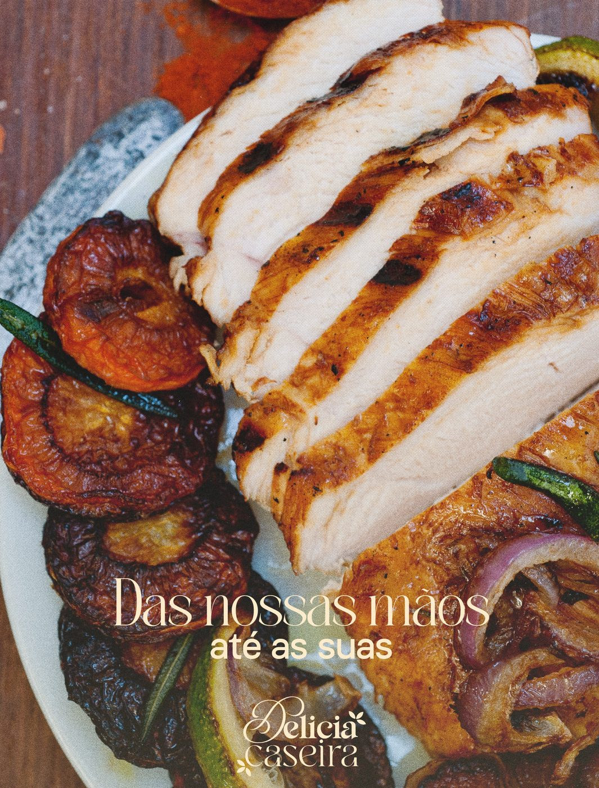

Esta é a Susailum. Criamos marcas, conteúdo e arte. Nossa especialização é focada em três campos: esporte, jurídico e gastronomia.
Branding · Social Media · Edição e produção de vídeo · Motion · Sites e muito maisManifesto
Design bonito que não comunica é decoração. A Susailum nasceu para fazer as duas coisas ao mesmo tempo: estética que para o scroll e estratégia que constrói marca.
Não atiramos para todos os lados: nossa especialidade fica em três universos — o esporte, o mundo jurídico e a culinária — e estudamos cada um com muita atenção e dedicação até entendermos a língua que você quer falar. É por isso que nosso design não parece "de agência": parece o ideal.

Especialidade 01
O rugido da arquibancada em forma de design. A energia do estádio, a rivalidade, a glória — tudo traduzido em peças que fazem o torcedor parar o dedo e sentir o jogo.

Especialidade 02
A elegância que o tribunal exige, com a personalidade que ninguém espera. O peso do Direito transformado em imagem — sóbrio, imponente e impossível de confundir.

Especialidade 03
Design que abre o apetite antes do primeiro garfo. O cheiro do fogão, o vapor do prato, a vontade de pedir agora — tudo isso em cores, texturas e tipografia.
After Effects no sangue: vinhetas, reels, animação de logo, overlays de live e motion para social.
Posts, carrosséis, capas editoriais, posters e key visuals que seguram o olhar no feed.
Mídia kits e decks comerciais que fecham parceria — como o do Samengo, usado com grandes marcas.
Identidade completa: logo, sistema visual, papelaria, embalagem e sinalização.
UI/UX e desenvolvimento com IA no fluxo — como o site da ALL Management Sports.
Direção de arte contínua: calendário visual, templates e séries de conteúdo com identidade.
Tem um projeto em mente?